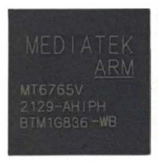

MediaTek MT6765
Jump to navigation
Jump to search
|  | |
| Manufacturer | MediaTek |
|---|---|
| Name | MT6765 |
| Codenames | mt6765/mt6762 |
| Architecture | aarch64 |
| CPU | 4x 2.3 GHz Cortex-A53 & 4x 1.8 GHz Cortex-A53 |
| GPU | PowerVR GE8320 (Rogue) @ 680 MHz |
| Year | 2018/2020 |
| Process | 12nm |
| Mainline | yes |
| Community Page | https://gitlab.com/mtk-mainline/mt6762/linux |
| Components | |
| CPU |
Partial
|
| UART |
Works
|
| Storage |
Partial
|
| USB |
Works
|
| Display |
Broken
|
| GPU |
Broken
|
| Pinctrl |
Works
|
| I²C |
Works
|
| SPI |
Works
|
| Audio |
Broken
|
| Video |
Broken
|
| Thermal | |
| WiFi |
Unavailable
|
| Bluetooth |
Unavailable
|
| Modem |
Unavailable
|
| GPS |
Unavailable
|
| Camera |
Broken
|
| Suspend |
Broken
|
{kind=link}
Helio P35 (MT6765),
Helio G35 (MT6765G),Helio P22 (MT6762), Helio A22 (MT6762M), Helio G25 (MT6762G) are low-end mobile MediaTek SoCs released in 2018 and 2020.
Helio P22T (MT8768T) is low-end tablet MediaTek SoC released in 2018.
Variants
| SoC line | MT6765/MT8768T | MT6762 | MT6762M | MT6762G |
|---|---|---|---|---|
| CPU Clock | 4x 2.3 GHz & 4x 1.8 GHz | 8x 2.0 GHz | 4x 2.0 GHz | 4x 2.0 GHz & 4x 1.5 GHz |
| GPU Clock | 680 MHz | 650 MHz | 650 MHz | 650 MHz |
Devices
Helio P35 (MT6765)
| Device | Codename | Mainline |
|---|---|---|
| LG K40 | lg-mmh4x | N |
Helio G35 (MT6765G)
| Device | Codename | Mainline |
|---|---|---|
| Xiaomi Redmi 9C | xiaomi-angelica |
Helio G37 (MT6765H)
No results
Helio P22 (MT6762)
| Device | Codename | Mainline |
|---|---|---|
| Lenovo Lenovo Smart Tab M10 FHD Plus | lenovo-x606f |
Mainline
There is a mainline kernel fork on GitLab @ mtk-mainline/mt6762/linux where development is currently (2023-08-12 / v6.5-rc3) active.
| Component | Part | Driver | Status | Notes |
|---|---|---|---|---|
| SoC | Mediatek MT6765 | WIP | ||
| SMP | SoC | arm,psci | P | Only 1 cluster (4 cores) |
| Storage | eMMC (MSDC0) | mt6765-mmc | N | Broken |
| SD-Card (MSDC1) | mt6765-mmc | Y | ||
| USB | Inventra MUSB | mtk-musb | Y | |
| Display | SimpleFB | simple-framebuffer | P | Causes kernel panic |
| GPU | img,powervr-series8xep mt6765-gpu |
N | ||
| MFlexGraphics Configuration | mt6765-mfgcfg | N | ||
| Multimedia System | mt6765-mmsys | Y | ||
| Smart Memory Interface | mt6765-smi-common | Y | ||
| SMI Local Arbiter | mt6765-smi-larb | Y | ||
| Display PWM | mt6765-disp-pwm | Y | ||
| OVL | mt6765-disp-ovl | WIP | ||
| OVL 2 Layer | mt6765-disp-ovl-2l | WIP | ||
| RDMA | mt6765-disp-rdma | WIP | ||
| Color | mt6765-disp-color | N | Not required for minimal dsi | |
| Gamma | mt6765-disp-gamma | N | Not required for minimal dsi | |
| Dither | mt6765-disp-dither | N | Not required for minimal dsi | |
| AAL | mt6765-disp-aal | N | Not required for minimal dsi | |
| CCORR | mt6765-disp-ccorr | N | Not required for minimal dsi | |
| DSI | mt6765-dsi | WIP | ||
| DSI PHY | mt6765-mipi-tx | WIP | ||
| Mutex | mt6765-disp-mutex | WIP | ||
| IOMMU | Memory Management Unit | mt6765-m4u | Y | |
| Pinctrl | mt6765-pinctrl | Y | ||
| Buttons | Keypad Scanner | mt6779-keypad | Y | |
| AP DMA | UART | mt6577-uart | Y | |
| I2C | mt6765-i2c | Y | ||
| SPI | mt6765-spi | Y | ||
| Video | MDP3 CCORR | mt6765-mdp3-ccorr | N | |
| MDP3 RSZ | mt6765-mdp3-rsz | N | ||
| MDP3 RDMA | mt6765-mdp3-rdma | N | ||
| MDP3 WDMA | mt6765-mdp3-wdma | N | ||
| MDP3 WROT | mt6765-mdp3-wrot | N | ||
| Thermal | TSENS | mt6765-thermal | P | Broken calib data |
| MT6631 | WiFi | mt6765-connsys | N | |
| Bluetooth | mt6765-connsys | N | ||
| GPS | mt6765-connsys | N | ||
| FM | mt6765-connsys | N | ||
| Camera | MIPI CSI Clock | mt6765-mipi0a | Y | |
| Sensor Interface | mt6765-seninf | N | ||
| Suspend | Cache Coherent Interconnect | mt6765-cci | N | |
| Smart Voltage Scaler | mt6765-svs | N | ||
| CPU Sleep | arm,idle-state | N | ||
| Clocks | Top Clock Generator | mt6765-topckgen | Y | |
| Infrastructure Configuration | mt6765-infracfg | Y | ||
| Peripheral Configuration | mt6765-pericfg | Y | ||
| Application Processor Mixed System | mt6765-apmixedsys | Y | ||
| Audio System | mt6765-audsys | Y | ||
| Video Encoder | mt6765-vcodecsys | Y | ||
| MCU System | mt6765-mcucfg | N | ||
| Image System | mt6765-imgsys | Y | ||
| Camera System | mt6765-camsys | Y | ||
| PMIC | Buttons | mt6357-keys | Y | |
| RTC | mt6357-rtc | Y | ||
| Regulators | mt6357-regulator | Y | ||
| Fuel gauge | mt6357-gauge | N | ||
| Haptics | Regulator-driven haptic | Y | ||
| External PMIC | Flashlight | mt6370-flashlight | Y | |
| Charger | mt6370-charger | Y | ||
| Backlight | mt6370-backlight | Y | ||
| Regulators | mt6370-regulator | Y | ||
| SPM | System Power Manager | mt6765-power-controller | Y |
Pending patches
- Add initial Imagination Technologies PowerVR driver (doesn't support PowerVR GE8320)
Relevant downstream sources
TCL A3 (bangkok_tf) Android Kernel